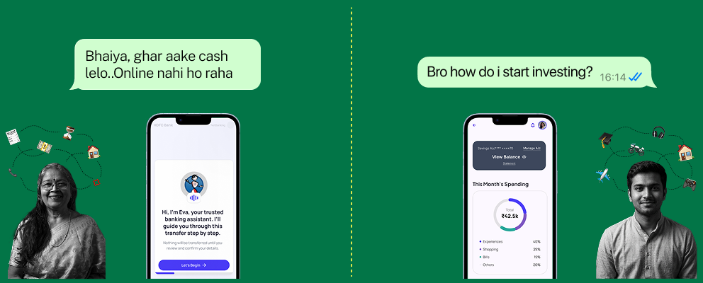
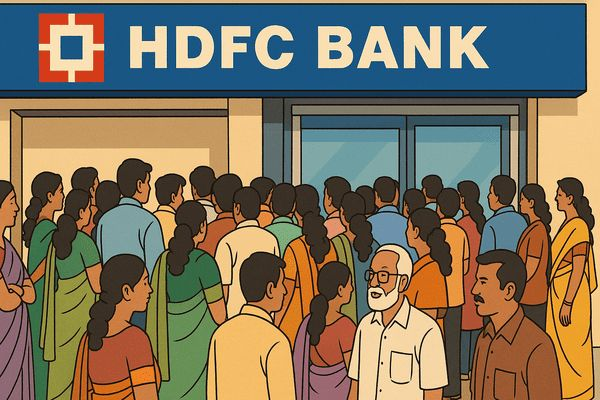

snippets from
my design
journey so far
my design
journey so far


HDFC Bank is one of India’s leading private sector banks, serving millions of customers through a wide range of financial products and services.
As banking increasingly moves online, HDFC has been expanding its digital banking experience, making more services available through its mobile app and online channels. The aim is to make everyday banking more convenient, accessible and seamless.

But availability does not necessarily translate to confidence.
User reviews and difficulties while using digital banking services
Customer reviews and online discussions reveal recurring difficulties with login flows, navigation and technical errors. Even when banking services are available digitally, completing tasks independently may not always feel straightforward.
Independence in banking can mean different things to different people. Our initial research aim was to find out the factors that created dependency on others for financial tasks.

Along with the above questions, we also framed some hypotheses to guide our research.
The intangibility of digital money reduces users’ sense of control compared to physical cash.
Age naturally affects comfortable usage of digital financial platforms.
Knowledge of eligible services may not be enough to translate into usage.
Perceived sense of support while transacting can make or break users’ confidence.
Our research methodology followed the exploratory route, starting off with a quantitative survey and then digging deeper with qualitative interviews.
Our research helped us identify age-specific behaviours, challenges and motivations around independent digital banking. To narrow our focus, we decided to explore two ends of the age spectrum: young adults aged 21–30 and seniors 60+.
Based on our opportunity statements, we developed feature concepts that could integrate into HDFC’s existing digital banking ecosystem. Each concept responds to specific insights from the two age groups, while considering the current capabilities of digital banking, emerging developments and possibilities for the future.
Increased financial awareness, both through knowledge of terms and upcoming services that could be relevant to him.
Planning for the future becomes a default, with small steps everyday contributing to personal goals. Visible progress builds consistency.
Asking for help is low-effort and conversational. He feels informed as well supported by a community of peers.
He can now approach larger decisions like travel, investments, higher studies with more clarity.
Understanding of digital finance and therefore usage increases. Daily tasks become comfortable with practice
Recovery routes seem visible and accessible, increasing confidence to perform transactions
Repeated transactions help build familiarity and lessen dependence on helpers or in-app guidance.
She can now approach new services she once avoided, due to lack of confidence or knowledge.
Exploring a vast sector like banking made me realise how complex user journeys can be, and how differently people experience the same service. Even within the same age group, needs, behaviours and levels of confidence varied. Making sense of these differences and deciding where to narrow our focus was one of the biggest challenges of the project.
Interviews with older adults made me more conscious of the things we often take for granted as designers. Details like colour contrast, button sizes and the language used in interface copy can significantly influence how approachable an experience feels. What might seem like a small design decision can determine whether someone feels comfortable navigating an interface or alienated by it.
We initially assumed that younger users would need less support with digital banking. However, our research challenged this assumption. Even people who regularly use digital tools and appear independent can hesitate when faced with unfamiliar financial decisions or services. It made me realise that independence isn’t simply about being able to navigate an interface; it’s also about having the confidence and trust to explore what a platform offers. Ultimately, the opportunity lies in helping users feel capable of making informed decisions and accessing services that could benefit them.